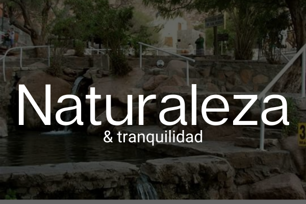
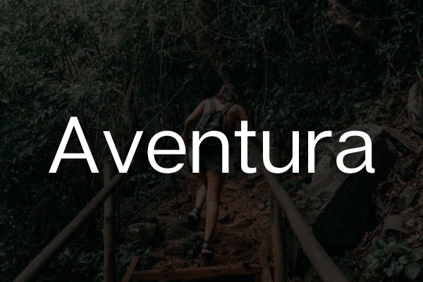
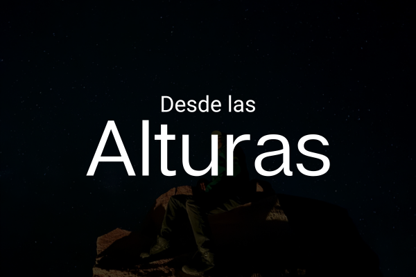

Excursiones Cordilleranas
Catamarca, un tesoro escondido entre montañas
Inicio
Destinos
Galería
Nosotros
Contacto
Destinos más visitados

Naturaleza y tranquilidad

Aventura
Históricos

Desde las alturas
Circuito Gastronómico
Bodegas
Información importante y servicios turísticos
Teléfonos de emergencia
Clima
Alojamientos
Casas de cambio
Cómo llegar